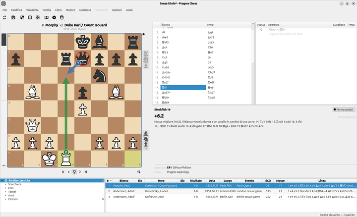
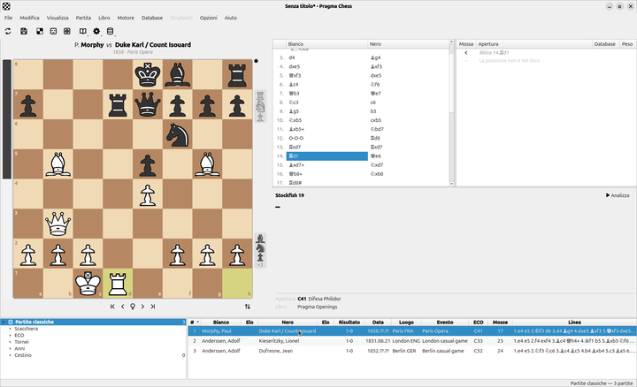
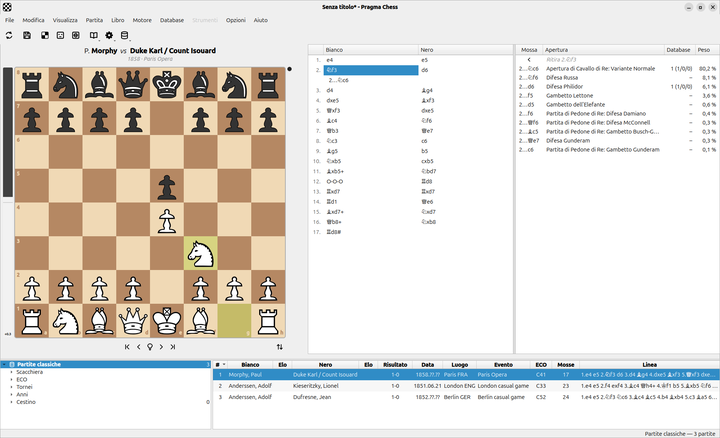
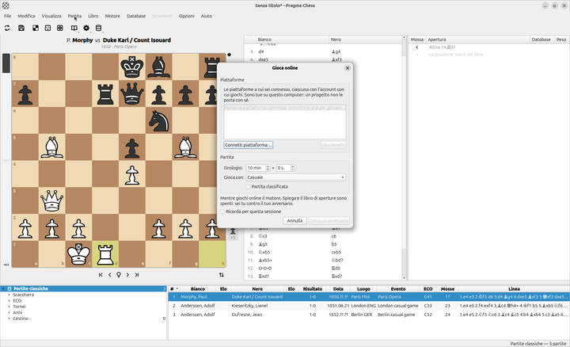
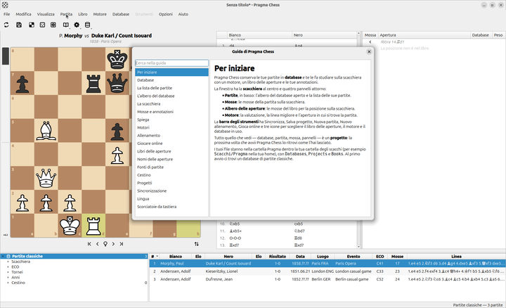

Databases of games
Your games in .pdb databases: import PGN, lichess.org and chess.com games, torneionline.com tournaments and ChessBase files. Search by position, variation, player, opening, tournament and year.
An open source chess database for studying, training and playing: light, simple, with what really matters.
Free, MIT licensed. For Windows, macOS and Linux.
Everything a chess player needs to keep, study and improve — and nothing in the way.
Your games in .pdb databases: import PGN, lichess.org and chess.com games, torneionline.com tournaments and ChessBase files. Search by position, variation, player, opening, tournament and year.
Press E and the engine shows on the board why the last move is good or bad: red arrows where material falls, blue arrows for the reply that makes the difference, a forced mate played out.
Play a move that is not the next one and it becomes a variation, shown under the move it replaces. Annotate moves with !, ?, ±, ∞… Everything is saved with the game and travels in PGN.
Play against the engine, from the opening book you tune. When your move is a mistake the tutor stops the game and lets you take it back, explain it or go on.
Connect your lichess.org account and play people from the same board. While you play, the engine, Explain and the book are off: it is you against your opponent.
Polyglot books with your repertoire and the weights you choose, so the engine trains you on the lines you want. Named openings in English and Italian.
Keep your databases and projects the same on every computer through an FTP, WebDAV or Git folder, and on your phone with the companion app. Nothing is ever deleted without a merge.
Database, game, move, panels and engine are a project you reopen as you left it. Native desktop interface, in English and Italian.
Pragma Chess on GNOME. Click a picture to see it full size.

Explain: why 14.Rd1 wins the Opera game
A game of the database on the board, with the moves and the games list
The Opening Tree: book moves with their weights and the openings they lead to
Play Online: connect a platform, choose clock and colour, find an opponent
The guide, built in, in your languagePick your system. The latest release is
Installer for Windows 10 and 11, 64-bit. A portable .zip is on the releases page.
Download for Windows PragmaChess-windows-x64-setup.exeDisk image for Apple Silicon Macs. Open it and drag Pragma Chess to Applications.
Download for macOS PragmaChess-macos-arm64.dmg.deb package for Ubuntu 24.04 and later and Debian 13 and later.
Download the .deb pragma-chess_amd64.deb.rpm package for Fedora and compatible distributions.
Download the .rpm pragma-chess.x86_64.rpmThe phone app for Android 8 and later, in beta: pair it with the desktop client to carry your databases and games. Soon on the official app store.
Download the APK PragmaChess-android.apkEvery release comes with Stockfish as the default engine; any UCI engine works. All releases and older versions →
The chess clubs that support Pragma Chess: they use it, test it and tell us what they need.
Introduce Pragma Chess to your members, then tell us how it went in our WhatsApp group and send us your logo there.
Pragma Chess is made in the open, with chess clubs and players.
The guide is built into the application (Help ▸ Pragma Chess Guide, F1), with a search field, in English and Italian.
Something wrong, or missing? Open an issue on GitHub with what you did and what you saw.
Issues on GitHub →The code is MIT licensed: C++ and Qt for the desktop client, Rust for the database engine to come. Pull requests are welcome.
The repository →